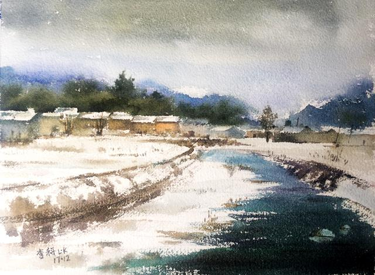
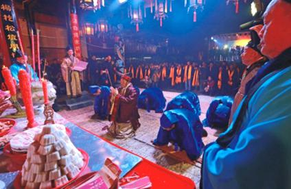
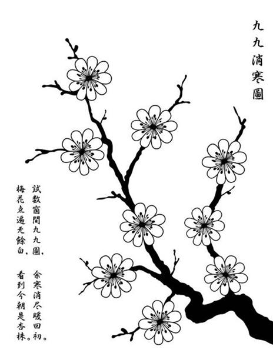
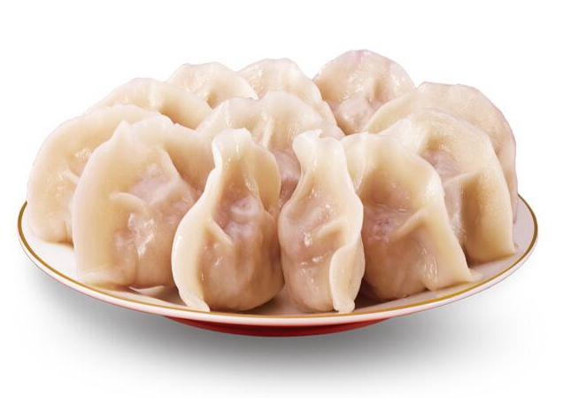

冬至是二十四节气的第22个节气。每年12月22日左右，太阳到达黄经270°时为冬至。今年的冬至时间是2017年12月22日（农历丁酉年十一月初五）。冬至这天，太阳直射地面的位置到达一年的最南端，几乎直射南回归线，这一天北半球的白昼最短，且越往北越短，黑夜最长。“吃了冬至饭，一天长一线”，冬至后，白昼时间日渐增长，而夜晚渐渐缩短。我国除少数海岛和海滨局部地区外，1月都是最冷的月份，天文学上也把“冬至”定为北半球冬季的开始。
根据《月令七十二候集解》记载，冬至三候为：“一候蚯蚓结，二候麋角解，三候水泉动”。传说蚯蚓是阴曲阳伸的生物，此时阳气虽已生长，但阴气仍然十分强盛，土中的蚯蚓仍然蜷缩着身体；糜与鹿同科，却阴阳不同，古人认为糜的角朝后生，所以为阴，而冬至一阳生，糜感阴气渐退而解角；山中泉水开始有涌动之势。
冬至后，虽进入了“数九天气”，但各地气候景观差异较大。东北大地千里冰封，琼装玉琢；黄淮地区也常常是银装素裹；大江南北此时平均气温一般在5℃以上，冬作物仍继续生长，菜麦青青，一派生机，正是“水国过冬至，风光春已生”。
冬至多风，寒冷年丰。
冬至在月头，要冷在年底；
冬至在月尾，要冷在正月；
冬至在月中，无雪也没霜。
立冬晴，一冬晴；立冬雨，一冬雨。
冬至三九则冰坚，冬至有霜年有雪。
立冬无雨看冬至，冬至无雨一冬晴。
冬至晴，正月雨；冬至雨，正月晴。
冬至冷，春节暖；冬至暖，春节冷。
冬至西北风，来年干一春。
《周礼》中有记载“以冬至日，致天神人鬼”的祭祀仪式。《后汉书》中记载：“冬至前后，君子安身静体，百官绝事，不听政，择吉辰而后省事。”官府放假七天，要举行祝贺仪式，称为“贺冬”。“冬至郊天”的礼仪（《周礼·春官·大司乐》：凡乐……冬日至，于地上之圜丘奏之），即祭天大典，一直延续到后世。宋代孟元老在《东京梦华录》中记述：“十一月冬至，京师最重此节，虽至贫者，一年之间，积累假借，至此日更易新衣，备办饮食，享祀先祖……庆贺往来，一如年节。”
宋以后，冬至逐渐成为祭祀祖先和神灵的节庆活动。古人认为自冬至起，天地阳气渐强，下一轮循环即将到来，是大吉之日。民间素有“冬至大如年”的说法，说明冬至的重要性。现今，很多地区仍保持着冬至祭天祭祖的习俗，如江浙、闽南一带，在冬至这天要过节庆贺。
九九消寒图 “九九消寒图”是一种游戏。明末《帝京景物略》里记载：“冬至日人家画素梅一枝，为瓣八十有一，日染一瓣，瓣尽而九九出，则春深矣，曰‘九九消寒图’。”另一种消寒图是一幅描红书法，上有繁体的“庭前垂柳珍重待春風”九字，每字九画，共八十一画。冬至开始，每天按笔画顺序填充一笔，每过“一九”填充好一个字。“九九”之后，春回大地。
冬酿酒 姑苏地区对冬至节气非常重视，传统的姑苏人家，会在冬至夜喝冬酿酒。冬酿酒是一种米酒，加入桂花酿造，香气宜人。冬至畅饮的同时，人们还会配以卤牛肉、卤羊肉等各式卤菜。在寒冷的冬天，冬酿酒不仅能够驱走寒冷，更表达了人们对生活的热爱。
包饺子 “冬至饺子夏至面”，北方有冬至吃饺子的风俗。俗话说“冬至不端饺子碗，冻掉耳朵没人管”。有一种说法，称这一习俗是为纪念“医圣”张仲景冬至舍药医治人们冻疮的善举。虽然饺子在南北方做法各异、名称不同，但广受人们喜爱。
二十四节气中，冬至、小寒、大寒是最冷的时节，对高血压、冠心病等患者来说，需要特别注意防寒保暖。数九寒天，起居需注意早卧晚起，合理安排户外活动。健康人群可以进行适当的御寒锻炼，如冷水洗脸等，保持机体的耐寒能力。此外，寒冷冬季还需要注意老年人的低体温现象，老年人的居室须采取防寒保暖措施。
寒来暑往，秋收冬藏，冬至前后是进补的好时机。饮食宜多样，谷类、果蔬、肉类合理搭配，适当选用高钙食品。冬令养生忌无病进补，药补也并非多多益善，任何补药服用过量都是有害的。